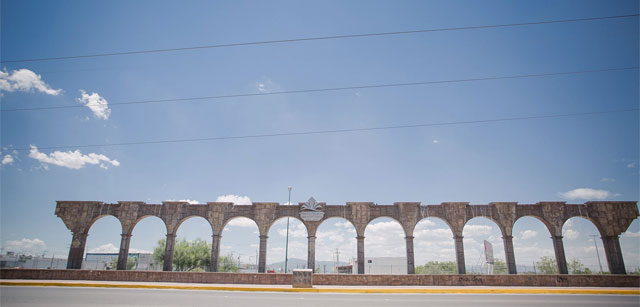
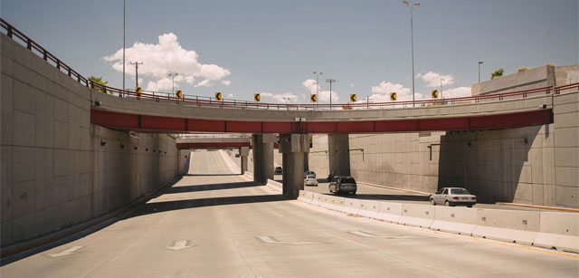
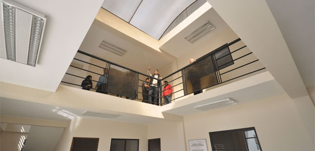

OBRA PÚBLICA
La Dirección de Obras Públicas está ejecutando trabajos de recarpeteo asfáltico en diversas colonias beneficiando directamente a sus habitantes...

UNA INVERSIÓN DE 58 MILLONES EN OBRA PÚBLICA
Además de la gestión de recursos para la construcción de techumbres en escuelas de nivel básico, la unidad deportiva La Esmeralda, la remodelación del Gimnasio Ibarra Rayas, la construcción de los Centros Culturales “El Siete” y “Dolores”, la remodelación del Centro de Convenciones Francisco Zarco y del teatro Alberto M. Alvarado por mencionar algunas obras.

PAVIMENTACIÓN CON CARPETA ASFÁLTICA
UBICACION: Calle Primera entre Tamazula y Topia, Col. Campillo Sainz
SUPERFICIE: 2,530.00 m2. (Dos mil quinientos treinta metros cuadrados)
DESCRIPCIÓN: Fresado de la superficie de rodamiento existente, limpieza, riego de liga y carpeta asfáltica de 5 cms. De espesor compactos.
PAVIMENTACIÓN CON CARPETA ASFÁLTICA
UBICACION: Calle Segunda entre Tamazula y Topia, Col. Campillo Sainz
SUPERFICIE: 2,270.00 m2. (Dos mil doscientos setenta metros cuadrados)
DESCRIPCIÓN: Fresado de la superficie de rodamiento existente, limpieza, riego de liga y carpeta asfáltica de 5 cms. De espesor compactos.
UNIDAD DEPORTIVA LA ESMERALDA
UBICACION: Ejido La Esmeralda, Municipio de Gómez Palacio, Dgo.
SUPERFICIE: 14,667m2 (Catorce mil seiscientos sesenta y siete metros cuadrados)
DESCRIPCIÓN: Construcción de campo de beisbol, gimnasio y ring para entrenamiento de box, área de baile, rehabilitación de gradas , construcción de baños y cerca perimetral, caseta y andadores.
CENTRO DEPORTIVO SAN ANTONIO, PRIMERA ETAPA
UBICACION: Fraccionamiento San Antonio
SUPERFICIE: 1,718 m2 (Mil setecientos dieciocho metros cuadrados)
DESCRIPCIÓN: Construcción de alberca semi olímpica techada, baños, vestidores, oficinas, área para academia de gimnasia olímpica, área para prácticas de tae kwon do, baile y aparatos de ejercicio.
REMODELACIÓN GIMNASIO IBARRA RAYAS
UBICACION: Colonia Fidel Velázquez «Chapala»
SUPERFICIE: 1,685 m2 (Mil seiscientos ochenta y cinco metros cuadrados)
DESCRIPCIÓN: Rehabilitación de techumbre con multipanel, colocación de duela en cancha, rehabilitación de gradas y baños. Remodelación de fachada.
CENTRO CULTURAL EL SIETE
UBICACION: Ejido El Siete, Municipio de Gómez Palacio, Dgo.
SUPERFICIE: 1,000 m2 (Mil metros cuadrados)
DESCRIPCIÓN: Taller de danza, taller de artes visuales, taller de música, biblioteca/ludoteca, jardín para exposiciones, área administrativa y servicios sanitarios.
CENTRO CULTURAL DOLORES
UBICACION: Ejido Dolores, Municipio de Gómez Palacio, Dgo.
SUPERFICIE: 1,000 m2 (Mil metros cuadrados)
DESCRIPCIÓN: Taller de danza, taller de artes visuales, taller de música, biblioteca/ludoteca, jardín para exposiciones, área administrativa y servicios sanitarios.
REMODELACIÓN CENTRO DE CONVENCIONES FRANCISCO ZARCO
UBICACION: Blvd. Miguel Alemán, Cd. Gómez Palacio, Dgo.
SUPERFICIE: 718 m2 (Setecientos dieciocho metros cuadrados)
DESCRIPCIÓN: Edificio anexo a Centro de Convenciones y remodelación de fachada en dos plantas.
